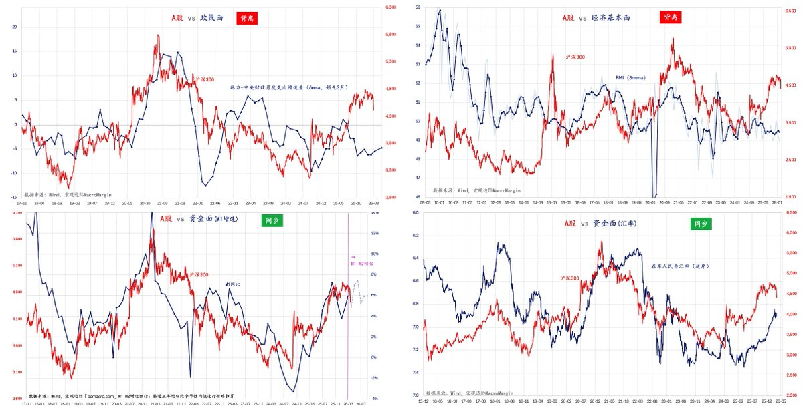

雪秋小可爱
@XUEQIUxka
@MacroMargin 感觉又可以玩币了

宏观边际MacroMargin
@MacroMargin
补充下这张图可能引起误会的点，乍一看感觉要和去年4月的救市类比了。
鉴于指数仍处于相对高位，且和经济基本面还是存在不小的背离，
即使最近出于防止“大落”会有动作，应该也只会是一些力度较小，或者口惠而实不至的小动作，
完全不能和去年贸易战伊始时的救市力度做对比（去年与基本面并无背离） https://t.co/ottTkpUvl1 https://t.co/XBcMpTu6gB